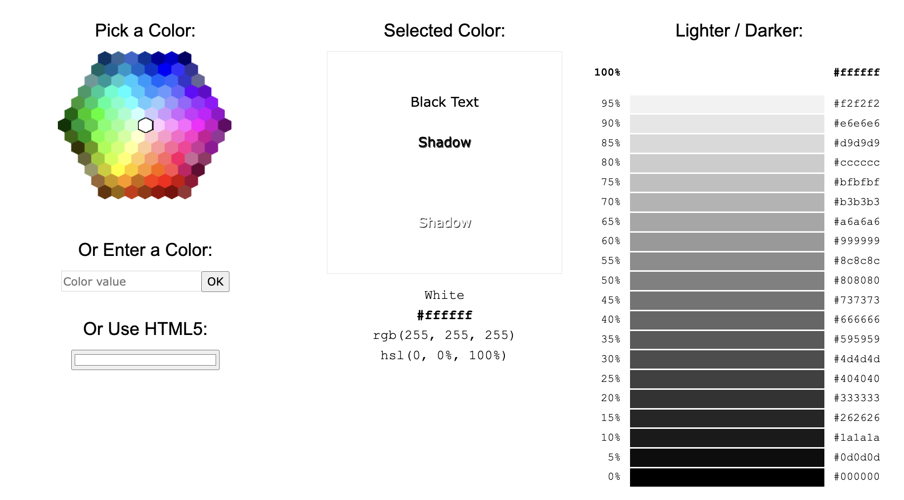
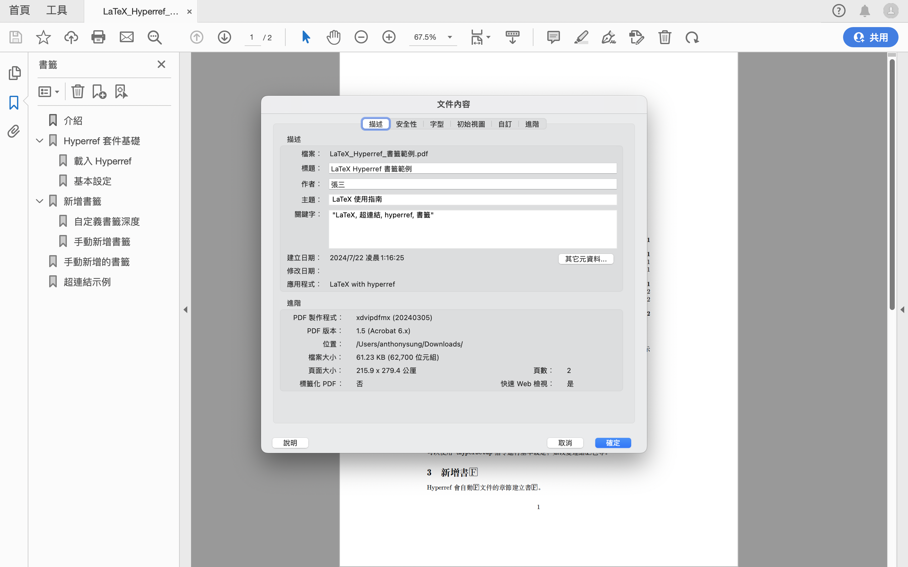

LaTeX 教學系列：進階設定
根據 LaTeX 教學系列 1～5 的內容進行延伸。
LaTeX 系列寫到這邊，相信很多讀者都應該能夠掌握一定程度的 LaTeX 技巧。從最一開始了解 LaTeX 的運作原理，到自己建立一份 LaTeX 文件、設定字體、使用數學模式、繪製表格與插入圖片等，基本上這些技巧足以應付 LaTeX 文件了。但人往往都是需要更進階、更有效率的功能，因此這篇文章是針對前面五篇的內容進行延伸，因此本篇內容會稍顯複雜，還請讀者多多擔待。
在這篇文章中，你會學到：
- 度量單位與空間調整
- 調整紙張方向
- 條列式清單
- 顏色
- 線條、方框
- caption 的設定
- 交互參照與超連結
度量單位與空間調整
排版是一門精確的藝術，需要精準地控制文字、圖片和其他元素在文件頁面上的位置與大小，正因如此，我們需要一套統一的長度度量單位系統，允許使用者和排版軟體準確指定元素的尺寸、間距和位置。沒有這些單位，排版將變得非常困難，幾乎不可能在不同設備和閱讀軟體上保持一致的外觀，否則會顯得突兀。
度量單位
度量單位在許多方面都有其重要性，在排版中的度量單位是長度。它們用於設定頁面邊距、段落縮進、行距、字體大小等。長度單位之所以重要，是因為它們必須適應不同的螢幕尺寸和解析度；同時，精確的度量單位還能確保輸出成品的品質不會參差不齊，使文字在各種紙張大小上都能正確地顯示出來。以下是 LaTeX 中常用的度量單位：
| 單位 | 全名 | 說明 |
|---|---|---|
pt |
點 | 1/72.27 英寸，約0.35 毫米 |
mm |
毫米 | 公制單位 |
cm |
公分 | 1 cm = 10 mm |
in |
英寸 | 1 in = 72.27 pt |
em |
em | 當前字體大小 |
ex |
ex | 當前字體的小寫 x 的高度 |
pc |
pica | 1 pc = 12 pt |
bp |
大點 | 1/72 英寸，用於 PostScript |
dd |
迪多點 | 1157/1238 mm，用於法國印刷 |
cc |
西塞羅 | 12 dd，約 4.531 mm |
sp |
可擴展點 | TeX 的最小單位，1 pt = 65536 sp |
空間調整：橫向直向距離
排版有時候在實務上最常碰到的問題就是需要微調，畢竟沒有一份精美的文件能夠一次到位，都是需要經過多次調整後才會有如此好看的結果。
LaTeX 常見的微調是橫向與直向距離的調整，我們會使用 \hspace 和 \vspace 這兩個指令進行調整，使用方式很簡單，只要以 \hspace{長度} 或 \vspace{長度} 即可調整。但是必須注意，這個長度包含度量單位，因此使用時需要加上你所使用的度量單位。此外，這個長度可以是負值，用於縮減空間。以下是一個調整橫向距離的實際範例：
接著是直向距離的調整：
除了固定長度的空白，LaTeX 還支援彈性空白，也就是空白會根據頁面的實際排版情況而自動調整。彈性空白的單位包括 \stretch 和 plus / minus。例如：
上述例子中，垂直空白的長度會在 0.5 公分至 1.5 公分之間進行自動調整，從而適應頁面的排版狀況。
另外，LaTeX 中，\hspace 有另一個兄弟（或姐妹）\hspace*。它們兩個都用於插入水平空白，但有一個重要區別：\hspace 在行首或行尾的空白會被忽略，而 \hspace* 則會保留這些空白。同樣地，\vspace 和 \vspace* 也適用於插入垂直空白，\vspace 在頁首或頁尾的空白會被忽略，而 \vspace* 則會保留這些空白。簡單來說，如果需要在行首或行尾、頁首或頁尾保留空白，那麼使用 \hspace* 或 \vspace* 較為適合。
LaTeX 還有提供插入彈性空白的指令，分別是水平的 \hfill 與 \hfil，以及垂直的 \vfill 與 \vfil。它們的用法分別說明如下：
| 指令 | 說明 |
|---|---|
\hfill |
在行內插入彈性空白，將後面的內容推到行的右邊 |
\hfil |
在行內插入彈性空白，根據需求在多部分之間平均分配空間 |
\vfill |
在頁面內插入彈性空白，將後面的內容推到頁面的底部 |
\vfil |
在頁面內插入彈性空白，不一定將後面的內容推到頁面底部，根據需求分配空間 |
空間調整：行距
行距通常指連續的兩行文字的基線間的距離，或指兩行文字之間的空白部分（行間）的寬度1。我們可以使用多種方法來調整行距，下面將介紹幾種常用的方法。
在 LaTeX 中，行距的調整是排版中的重要一環，能夠顯著影響文件的可讀性和美觀性。行距指的是兩行文本之間的垂直間距。在 LaTeX 中，我們可以使用多種方法來調整行距，本文將介紹幾種常用的方法。
基本行距調整
最基本的方法是使用 \linespread 指令來調整全域的行距。該指令的參數是一個相對於標準行距的倍數（請注意，它是比例）。例如，如果希望行距加倍，可以在前言區加入 \linespread{2}，這樣整份文件的行距就會變為標準行距的兩倍。同理，如果希望設定為 1.5 倍行距，可以使用 \linespread{1.5}。
使用 setspace 套件
另一種常用的方法是使用 setspace 套件。首先需要在前言區載入該套件，載入後則可以使用以下指令設定不同的行距：
- 單倍行距：
\singlespacing - 1.5 倍行距：
\onehalfspacing - 雙倍行距：
\doublespacing
例如，如果希望在文件中設定 1.5 倍行距，可以這樣寫：
此外，可以在局部區域內設定行距。例如，只在某段落內設定雙倍行距：
另一種方式則是使用以下兩個較為靈活的方式：
- 調整標準行距倍數：
\renewcommand{\baselinestretch}{} - 精準調整行距：
\setlength{\baselineskip}{}2
\renewcommand{\baselinestretch}{倍數} 指令用於全局調整行距。這個指令通過設定一個相對於標準行距的倍數來調整行距，跟 linespread 很相似。而 \setlength{\baselineskip}{長度} 指令則用於設定行距的基線距離，其中行與行之間的距離為長度，因此可以用來精準地控制每行之間的距離。
空間調整：首段縮排
「中文首段縮排」應該是臺灣學生從國小初次寫作文開始便習得的習慣3。Word 只要按下 tab 鍵即可縮排，但 LaTeX 預設第一段首段不會縮排，不符合中文的使用習慣，因此需要仰賴套件的協助。4
LaTeX 中調整首段縮排的套件是 indentfirst，我們可以使用以下指令進行縮排：\setlength{\parindent}{2em}，其中 par 代表段落，indent 則是縮排的英文 “indentation” 的縮寫。此時所有段落的第一行就會縮排。
如果某一段落不想要首行縮排，可以在段落文字開始之前加上 \noindent 指令；如果想要保證該段首行縮排，則加上 \indent 即可。
調整紙張方向與直書
有時文件需要以不同的方式進行呈現，一方面是為了美感，另一方面則是為了讓讀者更容易閱讀文字，舉例來說，臺灣的國文課本絕大多數是直書編排（應該沒有一個出版社是橫書編排，有的話可以拍給我看）。為了迎合特定需求，我們便需要設定文件的方向、排版方向等。以下將先介紹如何調整紙張方向，接著提到中文使用者最需要的直書編排。
調整紙張方向
現實生活中，常見的印刷品通常都是直向（portrait），但有時也會有橫向（landscape）的需求，例如考卷。因此，在排版中調整紙張方向是一項重要技能，能夠影響讀者的閱讀體驗和視覺效果。紙張方向主要分為縱向和橫向兩種。選擇適當的紙張方向不僅能讓內容的呈現更良好，更能提高讀者的閱讀舒適度。
縱向排版通常適用於文字較多的文件，如書籍、報告或論文等，因為直向能夠容納更多的文字行數，有利於讀者順暢地閱讀長段落。相比之下，橫向排版則更適合展示寬幅的圖表或大型表格等。
使用 geometry 套件
之前我們在LaTeX 教學系列：基本設定介紹過 geometry 套件，當時我們只有針對紙張大小、邊界等進行設定。如果我們想要將紙張轉成橫向，只要載入此套件後，使用 landscape 選項，即 \usepackage[landscape](geometry)。
直接設定
另一個直接將整份文件轉向的方法是直接在文件類型進行設定，也就是 \documentclass[landscape]{文件類型}。
但是如果沒有設定好邊界，就會像上面的例子一樣跑版，因此建議設定邊界，參數可以參考以下的範例：
使用 pdflscape 套件
當然，不是所有時候都需要將整份文件都轉向。如果我們只需要將文件中特定頁面轉向，例如有一張較大的迴歸分析表，那麼就可以使用 pdflscape 套件，該套件允許使用者在文件中局部改變頁面方向。
直書編排
直書是中國傳統文化中的重要元素，源遠流長。在古代中國，文字多以直書形式呈現，也就是由右至左、由上至下。該書寫方式不僅體現了中國文化所具有的獨特性，也與漢字的結構特點相得益彰。直書能夠充分展現漢字的方塊特性，使得每個字都能獨立成章，形成一種視覺上的均衡美感。
此外，直書在某些場合仍然具有它重要的意義。例如，在書法藝術中，直書能夠更好地展現筆劃的流暢性和作品的整體氣韻。在傳統建築和文物中，直書題字也常被用來彰顯莊重感和歷史感。因此，在現代排版中，有時仍需要使用直書來呈現特定的文化內容或營造特殊的氛圍。
廢話不多說，直接看例子：
條列式清單
條列式的表達在各種領域都十分重要，除了簡潔之外，讀者也可以快速閱讀完相關內容，輕易地理解作者提出的論點、比較的基準等5。LaTeX 中有三種條列式清單的環境，分別是 itemize、enumerate 與 description，每個條列環境最多可以支援到六個嵌套。以下我們就一一介紹這三種不同的條列式環境，並進一步講解如何調整裡面的內容。
不同種類的清單
LaTeX 所提供的清單環境，每一個項目都是以 \item 開頭，後面放上內容。如果想要針對項目符號進行調整，請參閱下一小節。
無序清單
無序清單適合用來列出不需要特定順序的項目，每個項目前都有一個符號標記，默認為實心圓點，例如我們想要顯示以下的無序清單：
- 項目一
- 項目二
- 項目三
我們只需將各項目放在 \itemize 環境即可。
有序清單
有序清單可以有效地呈現需要按順序排列的內容，有序清單預設的項目編號是阿拉伯數字，例如我們想要呈現以下的有序清單：
- 項目一
- 項目二
- 項目三
可以使用 enumerate 環境。
說明性清單
在 LaTeX 中，說明性清單是一種特殊的條列清單，用於列出帶有標題的項目。此種清單格式特別適用於定義列表或需要解釋的術語。使用方法如下：
說明性清單的環境中，每個 \item 後面的 [] 是自定義標題，隨後是該項目的說明。使用者可以定義自己的標題，且可以透過調整格式設置來改變標題的外觀，例如字體加粗、斜體等。
設定清單
如果我們不喜歡預設的清單項目符號，可以利用不同的方法來設定，例如有時需要羅馬數字、英文字母等。但是在 LaTeX 中，我們需要將這些數字進行特別處理，將數字視為順序，並利用指令來呈現出想要的項目編號。以下是 LaTeX 提供的指令，用於調整項目編號：
| 指令 | 說明 |
|---|---|
\arabic |
阿拉伯數字 (1, 2, 3, …) |
\roman |
小寫羅馬數字 (i, ii, iii, …) |
\Roman |
大寫羅馬數字 (I, II, III, …) |
\alph |
小寫字母 (a, b, c, …) |
\Alph |
大寫字母 (A, B, C, …) |
使用 \renewcommand 調整編號
最簡單調整編號的方式是使用 \renewcommand。之前沒有介紹過這個指令，在這邊快速講解。\renewcommand 用於重新定義既有的指令，其指令內容為 \renewcommand{原指令名稱}{定義}，也就是針對既有的指令進行調整。
套用在項目編號的設定中，\renewcommand 的使用方式為 \renewcommand{項目名稱}{欲設定符號}。不同的條列式環境都有對應的項目名稱，\itemize 環境對應到 \labelitemi，enumerate 環境則對應到 \labelenumi。例如我們可以將 enumerate 環境的項目編號改成帶括號的小寫英文字母，即 (a)、(b)、(c)…：
使用 enumitem 套件調整編號
如果需要更複雜的編號格式，可以使用 enumitem 套件。使用方式很簡單，只要在 \begin{條列式環境} 後面加上方括號，並在括號內加入 label=欲設定符號* 即可6。例如我們將 enumerate 環境項目編號修改成大寫羅馬數字，並在編號後面都加上一個點，則可以參考以下程式碼：
enumitem 的功能還不止這些，利用此套件，我們還可以進一步設定條列式清單的其他外觀。而在設定不同外觀時，請記得使用半形逗號 , 進行分隔。
- 調整內縮距離：使用
left調整清單的內縮，也就是項目符號可以左右移動使其對齊。 - 設定項目間距：利用
itemsep，我們可以調整各項目之間的間距。 - 調整整體清單間距：我們可以調整周圍文字或清單項目之間的垂直和水平空白距離，使用
parsep調整段落間距，topsep調整清單上方和下方的空白。 - 多層次清單：上面提到 LaTeX 的條列式清單最多可以支援六個嵌套，載入
enumitem套件後就可以使用此功能。7
以下範例同時使用上面四個設定：
顏色
顏色在我們的日常生活中扮演著不可或缺的角色，不僅能夠傳達情感、突顯重點，還能創造視覺上的美感和層次。從交通號誌的紅綠燈到品牌標誌的設計，顏色無處不在，並且在無形之中影響著我們的決策和感受。同樣地，在文件製作中，恰當地運用顏色同樣能夠有畫龍點睛的效果，幫助讀者更好地理解文件。
在 Word 中，新增顏色通常是一個簡單直接的過程——直接選擇文字，然後從調色板中挑選所需的顏色即可。然而，在 LaTeX 裡面，顏色的使用雖然有點複雜，但卻更加精確且系統化的方法。
LaTeX 中的顏色處理主要依賴於專門的顏色套件。最常用的兩個套件是 color 和 xcolor，其中 xcolor 是 color 的拓展版本，提供了更多進階功能。這些套件允許使用者定義自己的顏色、混合顏色、調整顏色深淺，甚至使用漸變效果。與 Word 等所見即所得的軟件不同，LaTeX 中的顏色定義和使用更加程式化、系統化，使得在文件中能夠保持顏色的一致性。
color 套件
color 套件是 LaTeX 中處理顏色的基礎套件，它提供了一系列基本的顏色定義和使用命令。載入 color 套件後，我們可以使用以下兩種指令改變文字顏色：\textcolor{顏色}{文字} 或 \color{顏色}{文字}。使用方法請參見以下範例程式碼：
color 套件事先定義的顏色指令有：black, blue, brown, cyan, darkgray, gray, green, lightgray, lime, magenta, olive, orange, pink, purple, red, teal, violet, white, yellow.。不過，世界上的顏色種類超過一億種，目前人類能夠區分出的顏色也有一千萬種，因此上面這些顏色指令往往不敷使用。因此，color 套件允許使用者定義自己的顏色。我們可以使用 RGB、CMYK 或灰度值等模式來定義顏色。
定義顏色的指令為 \definecolor{自定義顏色名稱}{色彩模式}{對應顏色值}，而以下是不同色彩模式、說明與範例：
| 色彩模式 | 說明 | 範例 |
|---|---|---|
rgb |
使用 RGB 值定義顏色（範圍 0-1） | \color[rgb]{1,0,0} |
RGB |
使用 RGB 值定義顏色（範圍 0-255） | \color[RGB]{255,0,0} |
cmyk |
使用 CMYK 值定義顏色（範圍 0-1） | \color[cmyk]{0,1,1,0} |
hsb |
使用 HSB 值定義顏色（範圍 0-1） | \color[hsb]{0,1,1} |
gray |
使用灰度值定義顏色（範圍 0-1） | \color[gray]{0.5} |
HTML |
使用 HTML 十六進制代碼定義顏色 | \color[HTML]{FF0000} |
Hsb |
使用 Hsb 值定義顏色（範圍 0-1） | \color[Hsb]{0,1,1} |
以下我們分別用 RGB、CMYK 與灰度值定義三種顏色：
如果你跟我一樣很懶想要有效率地定義顏色，可以參考LaTeX Color這個網站。該網站提供多種顏色的定義和程式碼範例，只要找到想要的顏色，點擊右邊的程式碼之後，複製下來即可。
另一個推薦的網站是HTML Color Picker，進入網站後可以看到以下的介面，右邊的 “Selected Color” 顯示使用者選取的顏色，並給予黑、白文字與加上陰影效果的範例，“Lighter / Darker” 區域則是讓使用者知道該顏色不同透明度的效果為何，且給予 HTML 的色碼。

使用者有好幾種方式選擇顏色，一是直接在六角形的區域選擇，二是點選 “Or Use HTML5” 下面的顏色條，就會顯示出選取顏色的畫面，可以在下方的選擇器點選想要顯示的色碼，或是點選滴管選擇圖片、網頁等的顏色。
xcolor 套件
在使用過 color 套件後，是不是發現好像少了一些功能，例如將文字加底色、改變頁面顏色等。沒錯！這時候就需要用到 xcolor 套件。
混色
xcolor 套件最大的優勢除了提供了更多的預定義顏色之外，還可以混色！混色的意思是可以利用百分比來混合兩種或多種顏色，例如 \color{red!30!blue} 就是使用了 30% 的紅色和 70% 的藍色混合而成的顏色（照理來說應該是紫色）。實際結果長這樣：
調整透明度
xcolor 允許使用者定義顏色的透明度（opacity），在建立浮水印或疊加效果時非常有幫助。使用方法就是在顏色後面加上半形的驚嘆號 ! 後，打上透明度的數字（從 0 到 100）。例如：
加入文字背景顏色
Word 裡面為文字加入背景顏色的方法是將文字框起來後，點擊文字醒目提示色彩，選取想要的顏色即可。不過可以發現到 Word 提供的顏色很少，但在 LaTeX 中使用 xcolor 就可以加入很多顏色，並且可以調整透明度。加入文字背景色的方式很簡單，指令為 \colorbox{顏色}{文字} 即可。以下是範例程式碼：
設定頁面底色
如果不想要頁面原本的底色，想要將頁面底色修改為其他顏色，除了使用 xcolor 套件外，還需要額外載入 pagecolor 套件。使用方法就是在前言區加上 \pagecolor{顏色} 即可。例如我們將頁面顏色設定為藍色，透明度為 20%，排版結果如下：
如果想要將頁面顏色改為白色，在該頁面開始前輸入 \pagecolor{white}，就可以變回白色。
色彩模式轉換
xcolor 套件支援色彩模式的轉換。例如，我們可以在 RGB、CMYK、HSB 等不同的色彩模型之間進行轉換。我們先看以下範例再來解釋：
進行色彩模式轉換的語法為 \convertcolorspec{輸入色彩模式}{色碼}{輸出色彩模式}{暫存指令}。它的意思是給定已知的色彩模式與在該色彩模式定義下的色碼，我們可以轉換成目標色彩模式。例如上述例子中，我們將預定義的顏色 Royalblue 的色碼以 RGB 色彩模式顯示出來，並將結果暫存在 \tmp 指令中。顏色轉換功能在需要精準控制顏色或在不同顏色模式之間轉換時非常有用。在需要知道某個命名顏色的確切 RGB 值，或者當需要將 RGB 顏色轉換為 CMYK 以便進行印刷、排版時，這個功能就能派上用場。
線條與方框
線條與方框在一份文件當中，可以拿來標示或分隔特定的文字。Word 與 LaTeX 在處理線條與方框上有很大的不同：Word 只要點幾個按鈕就可以繪製線條與方框；LaTeX 就需要透過指令來繪製。在線條與方框上面，確實 LaTeX 略遜一籌，但是 LaTeX 提供的線條與方框美觀程度不輸 Word。
線條
LaTeX 提供了多種繪製線條的方法，其中最常用的是 \rule 指令，\rule 指令的基本語法是：\rule[raise]{width}{height}。其中，raise 是可選參數，表示線條相對於基線的垂直偏移量；width 是線條的寬度，height 則是線條的高度。例如，\rule{5cm}{0.4pt} 會繪製一條寬 5 公分、高 0.4 pt 的水平線。除了基本的水平線，LaTeX 支援垂直線和斜線。要繪製垂直線，只需將寬度設為很小的值，高度設為所需長度即可。例如，\rule{0.4pt}{3cm} 會產生一條高 3 公分的垂直線。
如果想要繪製斜線，就需要使用到 graphicx 套件，雖然 \rule 指令本身不能直接畫斜線，但結合 \rotatebox 和適當的調整，我們可以實現各種角度和長度的斜線效果。。首先，在前言區中載入graphicx套件後，使用如下語法來繪製斜線：`
如果需要更精確控制斜線的位置，可以將 \rotatebox 和 \rule 組合放在一個 \raisebox 指令中，即 \raisebox{垂直偏移}{\rotatebox{角度}{\rule{長度}{粗細}}}。例如：\raisebox{5pt}{\rotatebox{30}{\rule{2cm}{0.6pt}}}，這樣就會將斜線向上移動 5pt，然後旋轉 30 度。
方框
在 LaTeX 中，方框是重要的排版工具。它們能凸顯出文件關鍵資訊與美化版面，提高可讀性。LaTeX 繪製方框可以用 \fbox、fancybox、tcolorbox、mdframed 等套件。
fbox 套件
事實上，使用 fbox 時可以不用使用套件，直接用 \fbox{文字} 即可。例如以下範例：
這個指令就是在文字外面加上外框而已，並無太大變化。
如果到這裡就介紹結束了，那就太小看 fbox 了。我們可以載入 fbox 套件進行更進一步的調整，並根據不同的需求，透過調整參數來改變方框的外觀。載入 fbox 套件後，我們使用 \fbox[參數]{文字} 來調整方框。這些參數包含：
| 參數 | 說明 |
|---|---|
r |
僅有右邊線條 |
l |
僅有左邊線條 |
b |
僅有下方線條 |
t |
僅有左右兩邊線條 |
T |
顯示在文字的頂端 |
B |
顯示在文字的底部 |
我們也可以用 \setlength 來調整 fbox 的線條寬度，語法為 \setlength\fboxrule{寬度}，使用後 fbox 的文字外框就會全部變成該寬度。例如 \setlength\fboxrule{5pt} 就會將外框線寬度設定為 5pt。
上述設定的結果有陰影的感覺，大家可以再嘗試看看其他的寬度。
fancybox 套件
fancybox 套件的名字聽起來就很 fancy，實際上也確實很 fancy。該套件提供了多種繪製文字外框的選項，包括陰影框（Shadowbox）、雙線框（Doublebox）和橢圓框（Ovalbox）。這些不同的外框指令如下表所示：
| 指令 | 說明 |
|---|---|
\shadowbox{} |
繪製帶陰影的外框 |
\doublebox{} |
繪製雙線外框 |
\ovalbox{} |
繪製圓角矩形外框 |
\Ovalbox{} |
繪製更粗的圓角矩形外框 |
我們也可以透過以下指令選項進行調整：
| 指令 | 說明 |
|---|---|
\cornersize{} |
調整圓角大小 |
\fboxrule |
調整框線寬度 |
\setlength{\fboxsep}{長度} |
調整文字與框線的間距 |
\parbox{} |
結合 \shadowbox 等指令實現框內文字換行 |
\vskip |
在不同外框之間新增垂直間距 |
\shadowsize |
調整陰影大小 |
直接看以下範例會更明瞭：8
tcolorbox 套件
tcolorbox 是一個功能豐富且十分齊全的 LaTeX 套件，它專門用於繪製自定義的彩色文字外框。此套件不僅僅提供基本的文字外框功能，更包括了多種設定，例如標題、分欄、嵌套外框、外觀設定等。
基本用法
在前言區載入 tcolorbox 套件後，我們可以直接進入 tcolorbox 環境：
從範例程式碼可以看到，tcolorbox 套件的預設底色是灰色，外框線為黑色。
參數設定
tcolorbox 套件有多樣的參數選項（是真的很多），允許使用者自訂文字外框的外觀，例如調整邊框顏色、背景顏色，tcolorbox 還支援多種特殊效果，如陰影、漸層等，建議直接看官方文件會比較快。以下是最基本的 tcolorbox 參數設定：
| 指令 | 說明 |
|---|---|
colback |
設定方塊的背景顏色 |
colframe |
設定方塊的邊框顏色 |
boxrule |
設定方塊邊框的寬度 |
width |
設定方塊的寬度 |
height |
設定方塊的高度 |
title |
為方塊新增標題 |
fonttitle |
設定標題的字型 |
sharp corners |
設定方塊為直角 |
rounded corners |
設定方塊為圓角 |
arc |
設定圓角的弧度 |
top |
設定方塊與上方文字的間距 |
bottom |
設定方塊與下方文字的間距 |
left |
設定方塊與左側文字的間距 |
right |
設定方塊與右側文字的間距 |
參數設定的方式很簡單，有兩種最主要的方式：直接在環境使用時設定，以及在前言區自定義一個 tcolorbox 樣式。
第一種方法是在使用 tcolorbox 環境時，直接在方括號 [] 中設定參數，也就是
\begin{tcolorbox}[
% 在此設定
]
範例文字
\end{tcolorbox}例如我們可以將背景顏色設定為淺黃色、使用深紅色邊框、設定標題為粗體，以及將標題文字設定為「範例文字框」：
另一個方法則是在前言區自定義樣式。方法是在前言區或欲修改樣式的前面開啟 \tcbset{} 的指令，並在裡面加上所要設定的樣式名稱，也就是：
\tcbset{
樣式名稱/.style={
設定 1,
設定 2,
...
設定 k
}
}使用方式則是在進入 tcolorbox 環境後，在方框內打上樣式名稱，亦即
\begin{tcolorbox}[樣式名稱]
...
\end{tcolorbox}我們直接看以下範例：
上面的範例程式碼中，我們建立了一個「蝦趴文字框」，除了調整背景顏色、外框顏色外，還微調了頂部與底部距離，以及加上一點點的陰影效果。
其實關於 tcolorbox 的玩法還有很多種，與下面要介紹的 mdframed 都是能夠開一篇新文章來討論的套件，不過這篇還是希望大家能夠先掌握基本的使用方法即可。
mdframed 套件
mdframed 套件跟 tcolorbox 一樣，是 LaTeX 中非常強大的文字外框套件。這個套件的名稱中的 “md” 代表 “multi-line”，代表它能夠輕鬆處理跨行甚至多頁的內容。
要開始使用 mdframed 套件，我們首先需要在前言區域載入它，接著就可以開始使用它的基本功能了。最簡單的用法是使用 mdframed 環境來包住我們想要框起來的內容：
\begin{mdframed}
簡單的 mdframed 範例。
\end{mdframed}mdframed 框架會自動調整大小以適應文字框中的內容，並將內容與周圍的文本分隔開來。直接上範例：
但 mdframed 的真正魅力在於它的彈性，跟 tcolorbox 一樣，我們可以利用一系列參數來調整框架的外觀。例如，如果我們想繪製一個帶有彩色背景的外框，可以使用以下程式碼：
\begin{mdframed}[backgroundcolor=yellow!20]
此文字框有淡黃色的背景，適合用來強調重要資訊。
\end{mdframed}mdframed 套件還支援更複雜的設計，例如我們可以製作出一個帶有陰影效果的文字框：
\begin{mdframed}[shadow=true,shadowsize=5pt,shadowcolor=gray]
此文字框帶有陰影效果。
\end{mdframed}如果需要在文件中加入特別注意的警告或提示，我們可以使用如下設定：
\begin{mdframed}[linecolor=red,linewidth=1pt,backgroundcolor=red!5,leftmargin=1cm,rightmargin=1cm]
警告：這是一個重要提示！
\end{mdframed}實際排版結果如下所示：
mdframed 的另一個強大功能是處理跨頁內容。當我們在文字框放入的內容太長，沒辦法在一頁內顯示完畢時，mdframed 會自動將內容分割到下一頁，並在新頁的頂部繼續繪製、延續上面的文字框設定。設定方法請見以下範例：
說明文字的設定
上一篇LaTeX 教學系列：表格與圖片的處理，我們介紹了 LaTeX 中表格與圖片的處理。不過，當時並沒有在說明文字（caption）有太多的著墨。原因是因為說明文字的設定稍顯複雜，因此額外變成一篇來討論。
論文中的圖、表都需要說明文字，而說明文字通常都有預設的標題。LaTeX 中圖片的預設標題為 “Figure:”，表格則是 “Table:”。但是，論文的撰寫語言不一定是英文，有時可能是中文。如果還是使用英文的說明文字標題，那麼會顯得有點突兀。因此我們需要修改說明文字的預設標題。
caption 套件
LaTeX 對於說明文字的設定，我們使用 caption 套件來處理。caption 套件的優勢是進行全域設定標題的樣式，確保整份文件中的說明文字標題保持一致。我們可以使用 \captionsetup 進行設定，語法為 \captionsetup[環境名]{參數1=值1, 參數2=值2, ...}，而可以設定的參數如下表呈現：
| 參數 | 功能 |
|---|---|
format |
設定標題的格式，例如 plain, hang, indented。 |
labelsep |
設定標題和標籤之間的分隔符，可以是 colon, period, space 等。 |
labelfont |
設定標題標籤的字體屬性，如 bf（粗體），it（斜體），sc（小型大寫字母）。 |
textfont |
設定標題文字的字體屬性，類似 labelfont。 |
justification |
設定標題的對齊方式，例如 RaggedRight, centering, justified。 |
singlelinecheck |
設定單行標題是否檢查對齊，取值為 true 或 false。 |
position |
設定標題的位置，例如 top, bottom。 |
font |
同時設置標籤和文字的字體屬性。 |
skip |
設定標題與圖像或表格之間的垂直距離。 |
width |
設定標題的最大寬度。 |
name |
設定標題類型的名稱，例如圖的標題為 “圖”，表的標題為 “表”。 |
type |
設定標題的類型，用於修改編號，例如將圖編號為表。 |
比方說我們想要將圖片與表格的標籤名稱分別設為 “圖” 與 “表”，可以參考以下程式碼：
進階用法：將標籤改為中文模式
如果想要將說明文字標題改為 “圖一、”、“表一、” 該怎麼辦呢？我們需要先複習一下，在 LaTeX 中如果要將阿拉伯數字轉換為中文數字，需要使用 CJKnumb 套件，接著使用 \CJKnumber{計數器} 將計數器放在裡面。
為了達到上述需求，我們需要執行兩個任務：將阿拉伯數字轉換成中文數字，以及將說明文字標題與內容的分隔符號轉成 “、”。我們分別來討論一下。
標籤編號的計數器是 thefigure 與 thetable，但是我們不會用到這兩個計數器，而是用參數的方式來處理，指令為 \DeclareCaptionLabelFormat{chinese}{#1\CJKnumber{#2}}，其中 #1 是標籤名稱，#2 則是標籤的編號。而頓號的處理則是用類似的方式，指令為 \DeclareCaptionLabelSeparator{dunhao}{、}，其中第一個括號內放分隔符號名稱，第二個則是放分隔符號實際呈現內容，此處為頓號。
以下程式碼為結合上述的範例：
DeclareCaption 設定
上面的範例中，提到可以使用 \DeclareCaptionLabelFormat 與 \DeclareCaptionLabelSeparator 這兩個指令來設定標籤格式與分隔符號。以下的表格提供的指令都是 \DeclareCaption 開頭，言下之意都是與設定標籤外觀有關。
| 指令 | 說明 | 範例 |
|---|---|---|
\DeclareCaptionFont |
定義新的字體樣式 | \DeclareCaptionFont{myred}{\color{red}} \captionsetup{labelfont=myred} |
\DeclareCaptionFormat |
定義新的標題格式 | \DeclareCaptionFormat{mybox}{\colorbox{lightgray}{#1#2#3}} \captionsetup{format=mybox} |
\DeclareCaptionLabelFormat |
定義新的標籤格式 | \DeclareCaptionLabelFormat{myparens}{(#2)} \captionsetup{labelformat=myparens} |
\DeclareCaptionLabelSeparator |
定義新的標籤分隔符 | \DeclareCaptionLabelSeparator{mydash}{ -- } \captionsetup{labelsep=mydash} |
\DeclareCaptionStyle |
定義新的標題樣式 | \DeclareCaptionStyle{mystyle}{labelfont=bf,textfont=it} \captionsetup{style=mystyle} |
\DeclareCaptionListFormat |
定義新的列表格式 | \DeclareCaptionListFormat{mylist}{圖 #2：} \captionsetup{listformat=mylist} |
\DeclareCaptionOption |
定義新的標題選項 | \DeclareCaptionOption{myoption}{\def\mycaption{#1}} \captionsetup{myoption=Hello} |
\DeclareCaptionTextFormat |
定義新的文字格式 | \DeclareCaptionTextFormat{mytext}{\textit{#1}} \captionsetup{textformat=mytext} |
\DeclareCaptionJustification |
定義新的對齊方式 | \DeclareCaptionJustification{myright}{\raggedleft} \captionsetup{justification=myright} |
\DeclareCaptionLabelFormat |
定義新的標籤格式 | \DeclareCaptionLabelFormat{mybold}{{\bfseries #2}} \captionsetup{labelformat=mybold} |
subcaption 套件
正如之前文章提到的，如果我們有許多子圖，這時候可能會有共同說明文字，抑或是每張子圖有各自的說明文字。我們需要使用 subcaption 套件來設定說明文字。
交互參照與超連結
在學術寫作或是任何需要精準且精確引用的文件中，交互參照是一個極為重要的功能。它能夠讓我們在文件的不同部分之間建立連結，使讀者能夠輕鬆地在文件中遨遊。想像一下，當在撰寫一篇長篇論文時，需要引用一個大概三個月之前寫的某個章節的圖表或方程式，如果沒有交互參照，可能就需要手動記錄並輸入每個引用的頁碼或編號，這不僅耗時，而且在後續修改文件時極易出錯。而 LaTeX 的交互參照功能則完美地解決了這個問題，它能夠自動追蹤和更新所有的引用，確保您的文件前後的引用始終保持一致性和準確性。
引用基本規則
LaTeX 的交互參照功能主要利用 \label 和 \ref 指令來引用。文件中的任何元素（如章節、圖表、公式等）都可以設定一個唯一的標籤，然後在文件的其他地方使用這個標籤來引用該元素。簡言之，在寫引用時，你應該先在特定元素出現的區域錨定後（打上 \label），再引用它（使用 \ref 呼叫）。
錨定方式是 \label{參照名稱}，其中參照名稱可以依照不同的元素進行分類，筆者最常使用的分類如下：
| 前綴 | 用途 | 範例 |
|---|---|---|
fig |
圖片 | \label{fig:histogram} |
tab |
表格 | \label{tab:results} |
eq |
方程式 | \label{eq:einstein} |
sec |
章節 | \label{sec:intro} |
subsec |
子章節 | \label{subsec:method} |
chap |
章 | \label{chap:theory} |
app |
附錄 | \label{app:glossary} |
alg |
演算法 | \label{alg:quicksort} |
lst |
程式碼清單 | \label{lst:function} |
thm |
定理 | \label{thm:pythagoras} |
lem |
引理 | \label{lem:inequality} |
def |
定義 | \label{def:matrix} |
ex |
例子 | \label{ex:application} |
假設有一張圖，我們可以這樣標記它：
\begin{figure}
\centering
\includegraphics{important-graph.png}
\caption{一個非常重要的圖表}
\label{fig:important-graph}
\end{figure}然後，在文件的其他地方使用 \ref{參照名稱} 即可：
如圖\ref{fig:important-graph}所示，我們可以看到......LaTeX 會自動將 \ref{fig:important-graph} 更新為正確的圖表編號。這樣即使在文件中增加或刪除了其他圖，導致圖片編號發生變化，引用也會自動更新，始終保持正確的順序。
另外，我們也可以引用頁碼，也就是標記出特定頁數，避免讀者找老半天都找不到。\pageref 命令可以引用標籤所在的頁碼，而 \nameref 命令（需要 nameref 包）則可以引用標籤所屬元素的名稱或標題。nameref 套件的使用方式是引用該套件後，使用 \nameref{參照名稱} 即可。
以下範例直接示範如何在 LaTeX 中使用交互參照：
超連結
可以發現，在使用交互參照時，雖然 LaTeX 自動將這些參照內容編號自動排序，但還是有個問題：讀者在閱讀時還是很難知道到底引用的內容在第幾頁；就算知道在哪一頁，也要翻一段時間。這時候我們都希望有一個類似超連結的功能，可以允許讀者按下引用內容後直接跳轉到該頁面。
幸運的是，LaTeX 提供了強大的超連結功能，利用 hyperref 套件來實現。該套件不僅能夠將交互參照內容轉換為可點擊的超連結，還能為導出的 PDF 文件新增書籤、設置 metadata 等。
基本使用方法
hyperref 套件只要在前言區載入該套件後，就可以將交互參照的內容變成超連結：
進階功能
當然，超連結不只有文內的交互參照才會使用到，一般網頁的超連結也可以派上用場。為網頁加上超連結的指令為：\href{網址}{顯示文字}。例如：
另一個 hyperref 套件的使用時機是在使用文獻時，文內連結到參考文獻章節。不過這個要等待參考文獻一篇中進行討論，此處不加贅述。
如果想要修改超連結顏色，我們在前言區使用用 \hypersetup{參數1=值1, 參數2=值2, ...} 這個指令即可，如果想要使用更多顏色，可以載入 xcolor 協助。例如以下範例僅設定文內交互參照超連結與網頁超連結的顏色，且注意到我們必須加上 colorlinks=true 才能夠讓超連結顯示顏色。
此外，我們可以設定 PDF 文件的 metadata。PDF 的 metadata（中文譯作元數據）是指儲存在 PDF 檔案中的額外資訊，這些資訊包含了文件的特性和內容，通常不會直接顯示在文件頁面上。常見的 metadata 包括文件標題、作者、文件創建日期、關鍵字等。這些資訊可以幫助讀者更容易地識別、搜索與管理 PDF 檔案。在大多數 PDF 閱讀器中，可以通過「檔案屬性」或類似選項來查看這些 metadata。
以下直接示範如何建立 metadata。
下圖就是範例程式碼導出的 PDF 中，metadata 所擁有的資訊。

Footnotes
維基百科 (2024, June 7). 行距. 維基百科，自由的百科全書. https://zh.wikipedia.org/wiki/行距↩︎
筆者較偏好使用這個指令，在設定上較為容易，也比較直觀。↩︎
Tung, B. (2022, May 12). 段落開頭為什麼要「空兩格」？ - Bobby Tung - Medium. Medium. https://bobtung.medium.com/段落開頭為什麼要-空兩格-99287e0653a9↩︎
LaTex论文排版 | (20) LaTex首行缩进-CSDN博客. https://blog.csdn.net/sdu_hao/article/details/103398959↩︎
新書搶先看》「條列式表達」是最強的商務技能-SmartM 人才培訓網. SmartM 人才培訓網. https://www.smartlinkin.com.tw/article/3243↩︎
注意到我們在設定
label=時，多半都會用花括號包住，目的是為了不要影響到其他設定。↩︎筆者不建議使用太多嵌套，因為太多層次的條列式清單會讓讀者看得眼花繚亂。↩︎
LaTeX 技巧 947： 玩转 fbox，排版再不难. LaTeX工作室. https://www.latexstudio.net/archives/51609.html↩︎
Reuse
Citation
@online{sung2024,
author = {Sung, Anthony},
title = {LaTeX {教學系列：進階設定}},
date = {2024-07-10},
url = {https://yueswater.com/posts/2024-07-10-latex-setting-advanced/},
langid = {en}
}